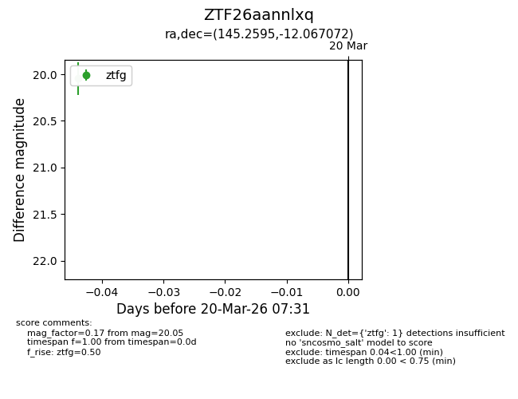
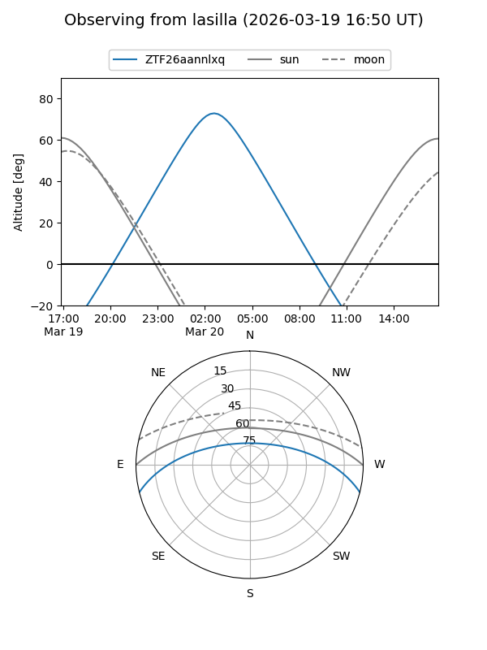
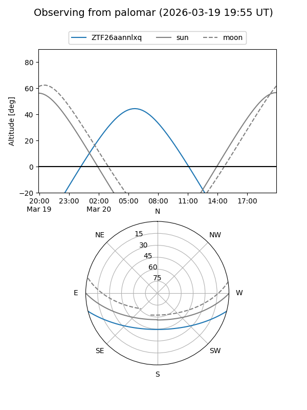

ZTF26aannlxq
Target ZTF26aannlxq at 2026-03-20 07:33
Aliases and brokers:
FINK: link
Lasair: link
ALeRCE: link
alt names
ZTF26aannlxq (ztf,fink_ztf)
Coordinates:
equatorial (ra, dec) = 145.2595,-12.06707
equatorial (HMS+DMS) = 09:41:02.28,-12:04:01.46
galactic (l, b) = (246.9127,+29.44149)
Flags:
Photometry:
last ztfg=20.05
1 ztfg detections
Lightcurve

Visibility


Additional plots